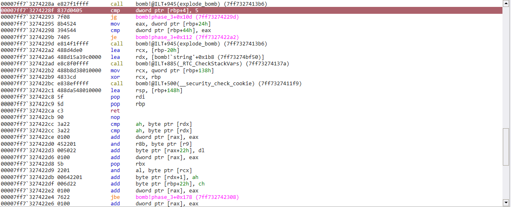
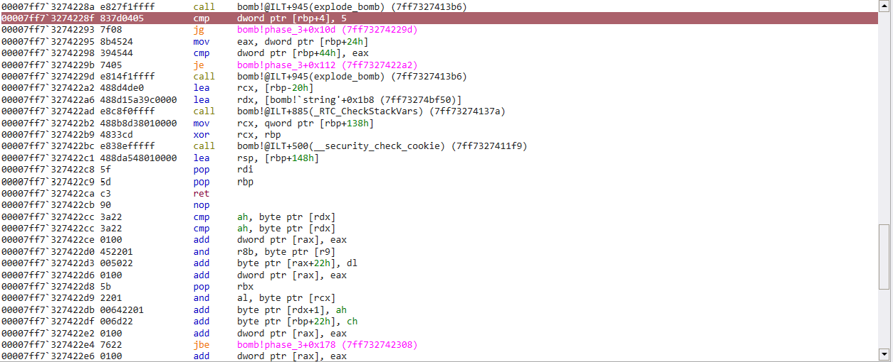
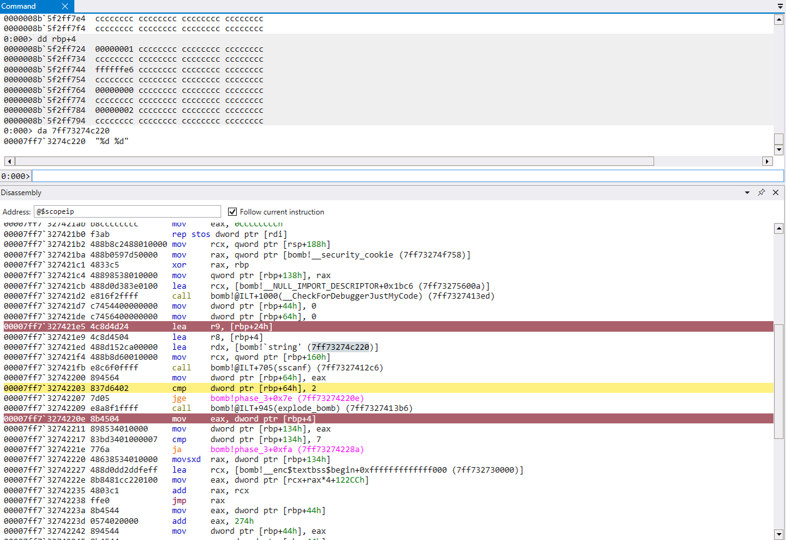
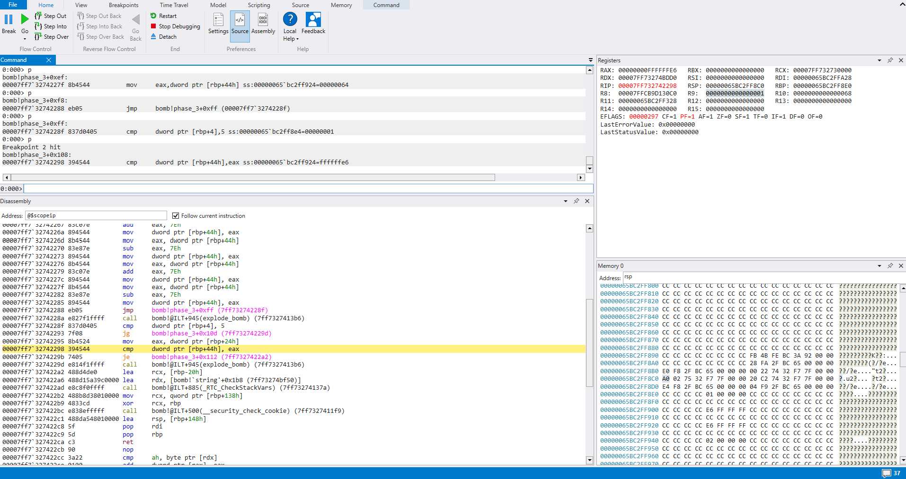

cmu binary bomb phase 3
- tags
- #reverse-engineering
- categories
- cmu-binary-bomb
- published
- reading time
- 2 minutes
 1/2

2/2
1/2

2/2
Right off the bat we can see our boilerplate instructions and just ignore those. They stress us out for no reason.
We also see a function call to
sscanf()explode_bomb()
sscanf() is used to extract data from strings, and looking at it’s
prototype
, we can see it takes at least 2 parameters.
- First is the char pointer to our input
- The second should be the format of the data we are attempting to extract.
To find out what kind of data phase_3() wants, let’s take a look at the parameters being passed to sscanf()

This function is expecting two numbers. Great, let’s continue stepping through.
It looks like the return value of sscanf() is moved to memory and then compared with 2. If it is not ‘greater than or equal’, we are going to explode

This confirms we must pass in 2 numbers for this challenge.
After jumping over the first call to explode_bomb(), there is a value loaded from [rbp+4] being compared with 7. This is our first input being compared with 7, and if it is ‘above’, we will take a jump to a call to explode_bomb()
We can observe this here

Thus we can infer our first input should be no greater than 7.
Continuing through the code, we see yet another comparison between [rbp+4], 5. This time we will take a jump to another call to explode_bomb() if our input is greater than 5.

Once we survive this cmp/jump, we come accross one last comparison in this function
mov eax, dword ptr [rbp+24h]
cmp dword ptr [rbp+44h], eax
je ... which skips the call to explode_bomb()
Printing the memory at [rbp+24h], we can observe our second input stored in memory. Printing [rbp+44h], we can see the expected number

If we haven’t made a mistake along the way, it looks like our first number can be 0-5, and our second input must be ‘0xffffffe6’, which equates to -26 in it’s signed twos complement form.
Let’s pass in 1 and ‘0xffffffe6’ and see what happens
 top right window
Viewing the registers window in the top right, we can see EAX successfully has the value the phase is expecting.
 success!
success!
On to phase 4!